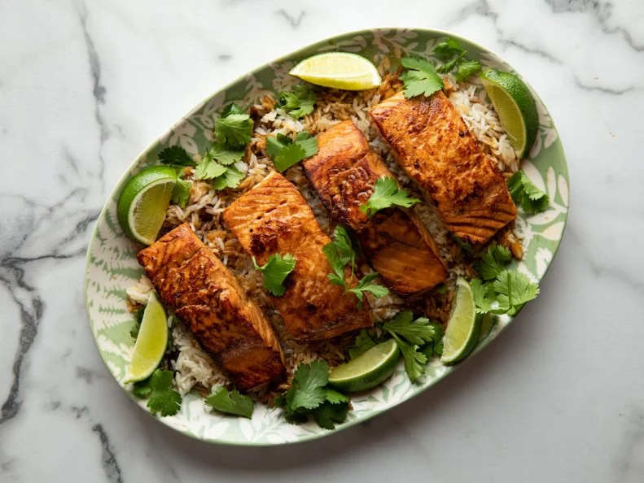

Home
Speedy Teriyaki Salmon

Description
Ree Drummon flavors quick-cooking salmon fillets with store-bought teriyaki sauce and serves them alongside microwave jasmine rice for a complete meal in a matter of minutes.
Ingredients
- Four 6-ounce skinless salmon fillets
- 2 cups teriyaki sauce
- 1 tablespoon vegetable oil
- 2 limes
- One 8.5-ounce pouch microwave jasmine rice
- 1/3 cup loosely packed fresh cilantro leaves
Directions
- Add the salmon to a shallow dish and pour the teriyaki sauce over the fillets. Using a pair of tongs, flip the fillets to coat them completely in the sauce.
- In a large skillet, heat the vegetable oil over medium-high heat. Add the fillets to the skillet and cook on the first side for 5 minutes, being careful not to let them burn. Carefully flip the fillets and cook another 2 minutes on the second side. Remove to a plate and set aside.
- Pour the remaining teriyaki sauce from the shallow dish into the hot skillet. Grate in the zest of 1/2 lime and allow the mixture to bubble and reduce for a few minutes. You do not want it to be super thick or sticky. Once reduced gently, nestle the salmon back into the skillet and spoon the sauce over top.
- Microwave the pouch of rice according to the directions on the package. Pour the rice onto a serving platter.
- Carefully transfer the salmon to the bed of rice. Spoon some sauce over top of the salmon and rice. Garnish the platter with the cilantro leaves. Cut the remaining lime into wedges and arrange along the edge of the platter for serving.